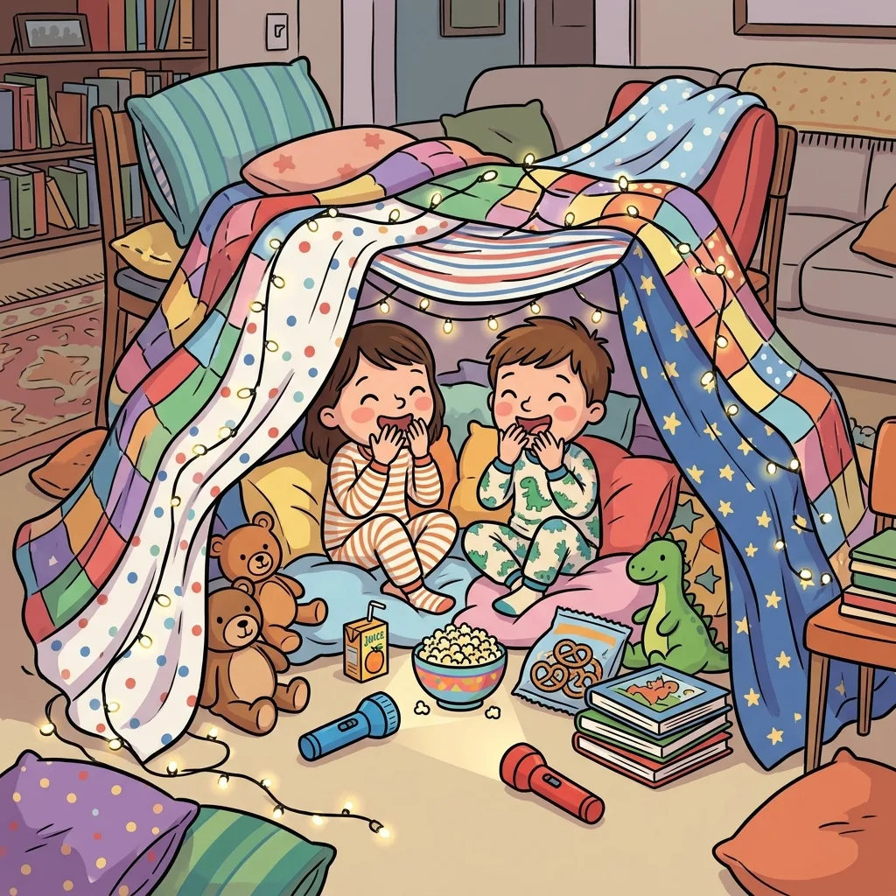
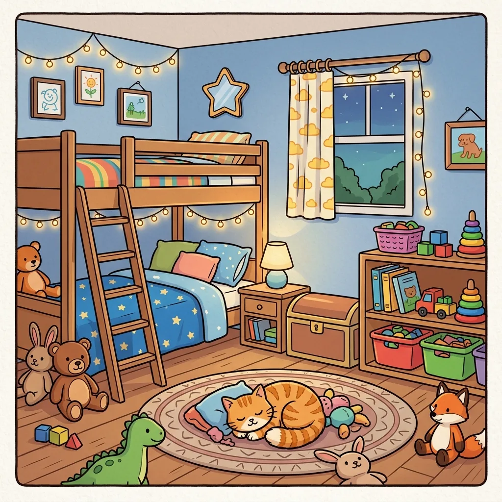

Quiet Time Activities That Actually Stay Quiet
Somewhere between age three and four, the nap dies — and with it, the one guaranteed quiet hour in the house. The standard replacement is "quiet time": kid in their room or at the table, engaged in something independent, while you reclaim thirty to sixty minutes. The concept is sound. The execution fails for one predictable reason: the activity runs out before the time does. This guide is about picking activities by their actual quiet-minute yield.

The three rules that make quiet time stick
- Same time, same signal, every day. After lunch works best. A visual timer the child can read ("when the red is gone, quiet time is over") kills the every-four-minutes "is it over?" check-ins.
- The activity must be genuinely independent. Anything that needs your help every three minutes is not quiet time; it's assisted playtime with extra steps. This disqualifies more crafts than you'd think.
- Novelty is the fuel. The same sticker book four days in a row yields four minutes by Thursday. Rotation — and printables that are new every time — is what keeps the engine running.
The honest ranking (minutes of quiet per activity)
- Audiobook + drawing (20–40 min) — the heavyweight champion for ages 4+. Ears occupied, hands occupied, zero reading required. Needs a one-button player or a screen locked to audio.
- Spot-the-difference sheets (10–20 min) — a bounded mission ("find all 8") with a built-in finish line, which paradoxically makes kids stay longer — finishing one earns the next. Two or three fresh sheets reliably cover 15+ minutes, and a fresh puzzle is the point: print new ones each day and it never goes stale. Match difficulty to age with our age-by-age guide.
- Sticker books, reusable pads (10–20 min) — excellent yield per dollar, but consumable; the yield collapses once every scene is filled.
- Coloring (5–25 min, high variance) — depends entirely on the child. For dedicated colorers it's gold. For the rest, one page, four minutes, done.
- Busy bags / activity boxes (10–15 min) — pipe cleaners, lacing cards, pattern blocks. Great for 3–4 year olds; needs weekly rotation or it becomes furniture.
- Puzzle books bought once (5–10 min/day, declining) — the workbook problem: the good pages get used up first, and by week two you own forty pages of the puzzles they didn't like.
The rainy-day escalation plan
A rained-out Saturday is quiet time's endurance event — you're not covering 45 minutes, you're covering the gaps in a whole day. What works is escalation, not one giant activity: start cheap (coloring, free play), hold the good material back, and deploy it in waves. Late morning: a fresh batch of spot-the-difference sheets, one theme per kid. After lunch: audiobook block. The desperate hour (4–5pm): the head-to-head round — two copies of the same puzzle, one kid on each, first to find everything wins. Competition converts the crankiest hour of the day into a rematch tournament. (Road trip version of this playbook, including the night-before printing method, is in our road trip guide.)
The waiting-room go-bag
The same logic, miniaturized: a slim folder in the car or your bag with four or five printed puzzle sheets and two golf pencils. Waiting rooms, restaurants, the DMV, church — anywhere the phone would otherwise come out. Sheets weigh nothing, cost nothing, and unlike the phone, hand back nothing but a calmer kid when you're done. Restock the folder when it's down to one sheet, which is exactly the kind of chore a five-year-old will do for you with enthusiasm.

Fresh puzzles every day — four themes, difficulty from preschool to sneaky, answer keys on a separate page. Free and unlimited.
Open the free generator
A word about screens (a realistic one)
This isn't a screens-are-poison guide — sometimes the tablet is the right call, and every parent knows it. The practical problem with screens as quiet time is the ending: paper activities wind down ("last one, then snack"), while screen time ends in a negotiation. If you do want a screen version for, say, a shared couch game after quiet time, a free online spot-the-difference played together sidesteps the worst of it — but for the daily independent hour, paper's boring exit is exactly what makes it work.
The realistic goal isn't a silent child — it's a reliable 30–45 minutes where nobody needs you, every day, with an ending that doesn't cause a meltdown. Stack the ranking above into a rotation, keep the novelty coming, and quiet time stops being a gamble and becomes furniture: just part of how afternoons work.